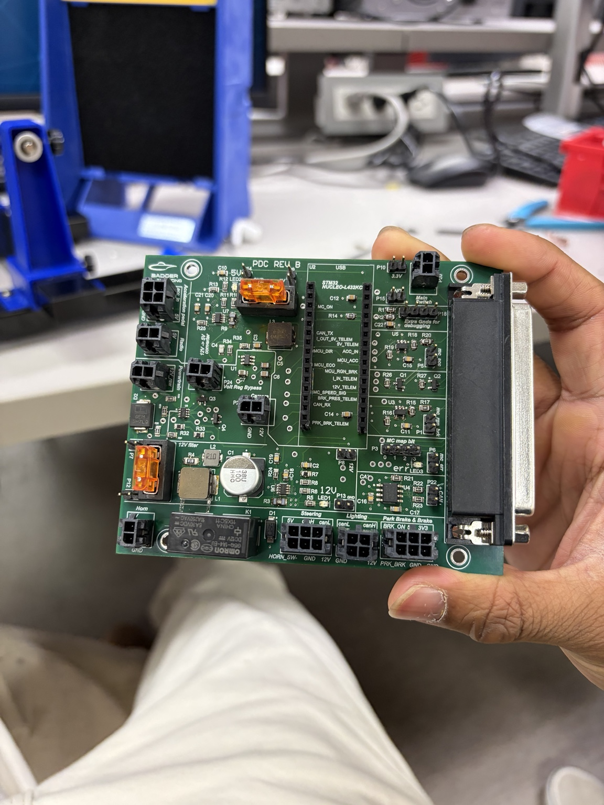
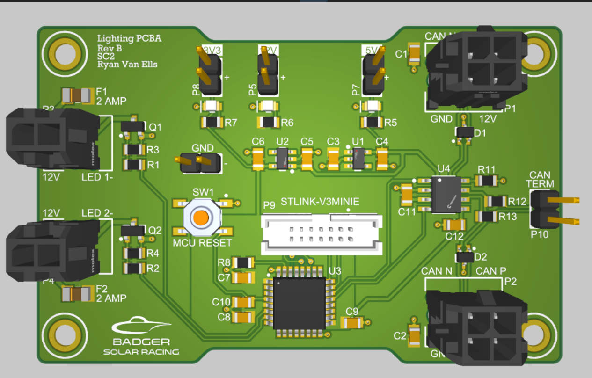

Badger Solar Racing
Design and debugging work on the low-voltage electrical system, with an emphasis on what I personally owned versus what I inherited and validated.

PDC Rev B
Redesigned the 12 V→5 V power conversion, current telemetry, and input protection on Badger Solar Racing's low-voltage control board, and took it through bench, lab, and in-car validation.

Lighting Board Debugging & Reliability
Tested, isolated, and repaired faults across seven CAN-connected lighting boards using structured fault-tree analysis, from board shorts to failed ICs and harness connectors.
Temperature-Controlled Fan
Designed a custom STM32 PCB from scratch: protected 12 V input, buck regulation, temperature sensing, and MOSFET PWM control of a 6 W brushless fan, with current fault detection.
2026 season, by the numbers
Team-level outcomes from the low-voltage system I contributed to — not a claim that any single board produced them.
Where I've worked
Racecar electronics and renewable-energy field operations.
Low Voltage Project Lead — Badger Solar Racing
- Lead technical development of the low-voltage system: primary point of contact for design decisions, debugging, and mentoring members through PCB development, testing, and integration
- Revised the PDC schematic and PCB in Altium — regulated power distribution, CAN communication, current/voltage telemetry, circuit protection, and motor-controller interfaces
- Ran component trade studies to select a 3 A synchronous buck converter, cutting the power stage's footprint ~60% and reclaiming board space for telemetry and input protection
- Simulated and validated voltage-regulation circuitry in Spice, evaluating MOSFET alternatives before PCB implementation and bench testing
- Resolved CAN and lighting faults using fault-tree analysis and DMM continuity/impedance measurements — 200+ competition miles with zero LV failures and the team's first ASC qualification
Renewable Engineering Intern — Madison Gas & Electric
- Developed remote-access procedures for tracker and inverter controls and implemented equipment tracking for 5,000+ renewable-energy assets, cutting maintenance time ~40%
- Led root-cause investigations across 10+ solar sites using SCADA monitoring, thermal imaging, drone inspection data, and field testing
- Commissioned EV charging equipment across a fleet of 140+ public chargers, running functional test charges and verifying hardware/network connectivity
- Analyzed BESS control systems through Tesla Megapack O&M and RTAC troubleshooting, supporting utility-scale storage controls and monitoring
Tools & technical grounding
Hardware / EE
- PCB design & assembly
- Schematic capture & board bring-up
- Soldering & rework
- Oscilloscope & multimeter debugging
- Power conversion
- Fault-tree analysis
- CAN, I²C, isoSPI, USB
Software & Tools
- Altium Designer
- Spice
- MATLAB
- STM32 / Nucleo
Programming
- C
- Python
- Java
- Verilog
Emerging Leader
One of 15 selected student leaders; mentors undergraduate engineering students and represents student feedback to College of Engineering leadership.
Music Director
Directs a 20-member a cappella group — leads weekly rehearsals and arranges repertoire for gigs and the semester concert.
I like the point where schematic design meets the bench.
My strongest work has come from taking hardware past the schematic: selecting components, laying out boards, bringing up hardware, finding why something failed, and improving the next revision.
I'm especially interested in PCB design, power electronics, analog/hardware engineering, embedded systems, and electrical systems for EVs and aerospace.